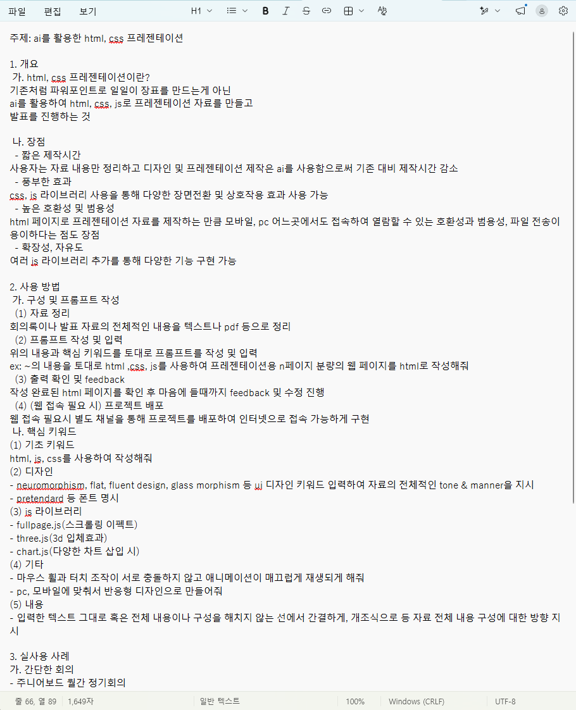
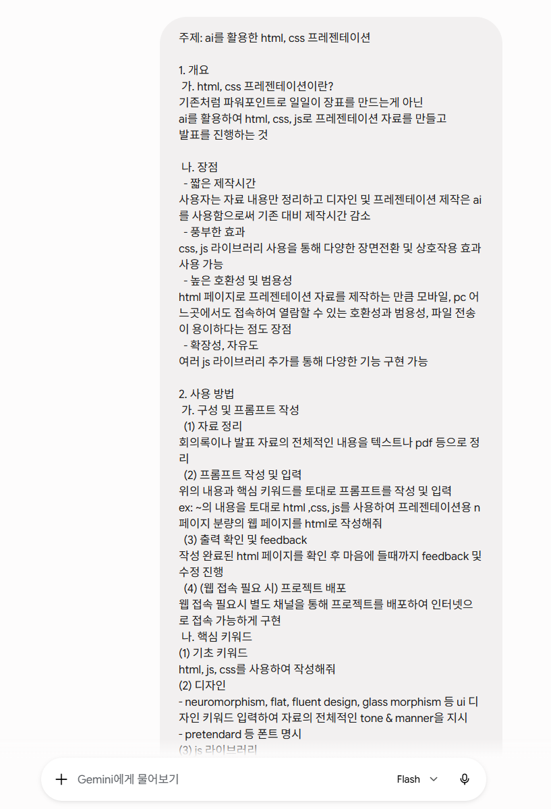
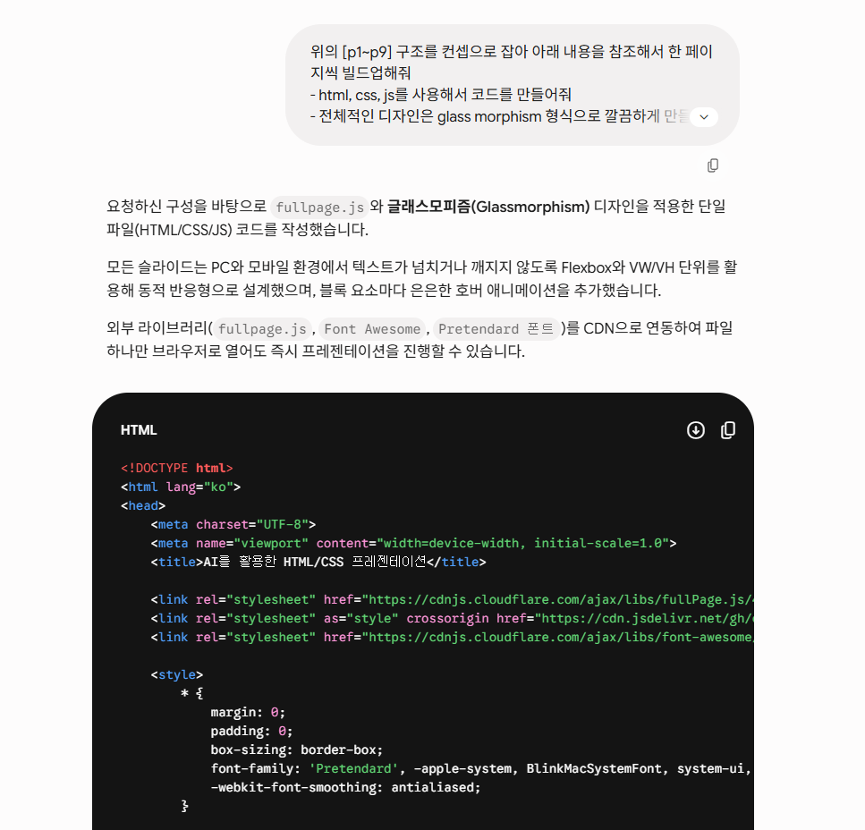
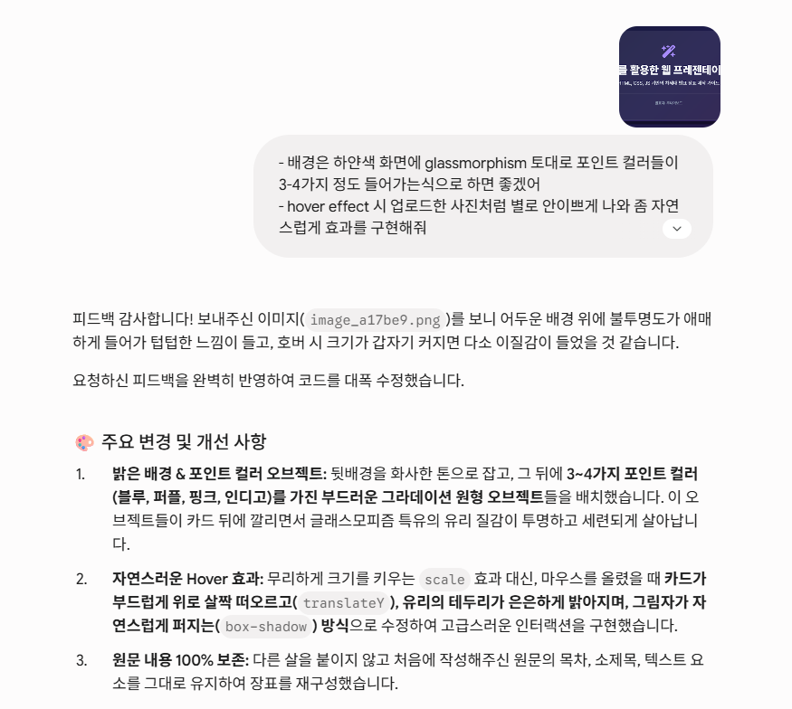
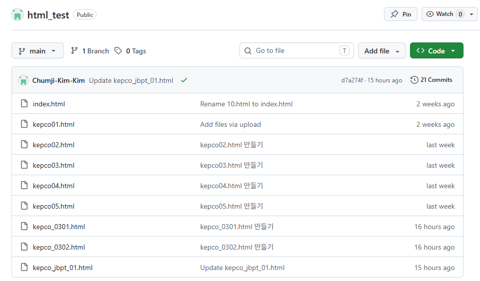

웹 기반 프레젠테이션이란?
기존처럼 파워포인트로 일일이 장표를 만드는게 아닌, AI를 활용하여 HTML, CSS, JS 코드를 생성하고 이를 활용해 발표 자료를 제작하여 웹 브라우저 환경에서 프레젠테이션을 진행하는 방식입니다.
AI 활용을 통한 단계별 웹 프레젠테이션 제작





html, css, js를 사용하여 자료를 제작하도록 지시
자료의 전체적인 무드와 톤앤매너 지시
본문 내용 전개 방향 지시
필요한 javascript 라이브러리 지정
가벼운 회의 자료부터 웹 고도화 예시까지
주니어보드 월간 정기회의 업무 문서 대체 사례
변전소 전경 시뮬레이션
※ 실행 시 sim_test 폴더 내 heightmap 및 위성지도 데이터 자동 인덱싱 구동 적용 완료
장단점 정리
감사합니다